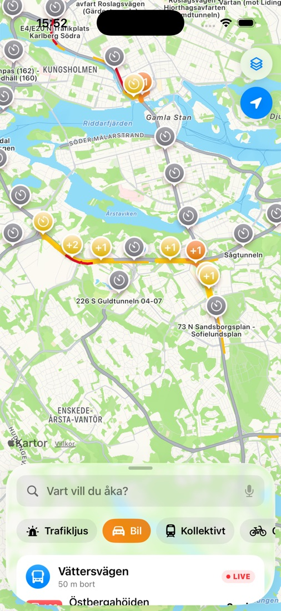
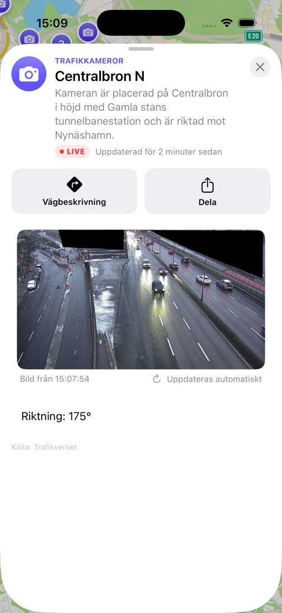
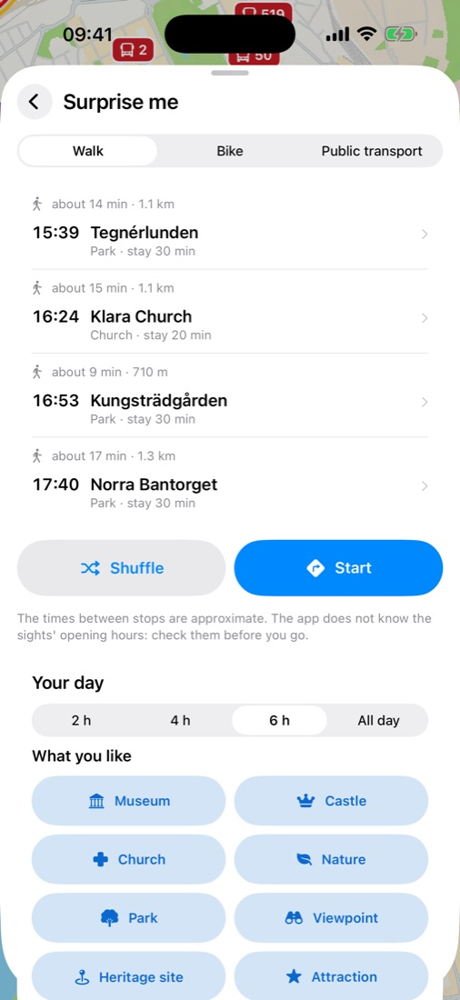

1枚の地図で見る、リアルタイムのスウェーデン。
360Mapsは、スウェーデンを訪れる人のためのアプリです。必見の名所を探し、バスや電車、船に乗り、交通状況、天気、駐車場を確認し、音声案内も受けられます。iPhoneで28言語に対応しています。
地図で見られるもの
必要なものをオンにしてください。すべて官公庁や交通事業者のオープンデータで、見ている間も更新されます。
-
名所
スウェーデンの必見スポット340か所以上を、写真、営業時間、Look Around、あなたの言語の短い説明つきで紹介します。写真はWikimedia Commons、説明文はWikipediaからです。
-
厳選スポット
旅行者のために選んだ場所です。たとえば、ストックホルムに住むイタリア人がすすめるイタリア式のエスプレッソバーなど。ズームに関係なく常に表示されます。
-
レストラン、カフェ、バー
それぞれ専用の色で表示され、営業時間もわかります。まとまりをタップすると一覧が開きます。スウェーデン全土で約2万か所です。
-
薬局と救急外来
スウェーデン全土の薬局と病院の救急外来を、営業時間つきで表示します。緊急のときは112番に電話してください。
-
海水浴場、自然、オーロラ
今日の水温つきのビーチ、国立公園、自然保護区、アイスリンク、そしてオーロラが見える可能性。
-
バス、地下鉄、電車、船
15の県で、車両が路線番号つきで地図上を動きます。赤はバス、青は地下鉄、紫は電車、ターコイズは船です。
-
渋滞と所要時間
ストックホルムの主要道路とトンネルで測定した所要時間を、1分ごとに表示します。渋滞は、通常より+2分のように表示されます。
-
道路の路面状況
道路の雪、シャーベット状の雪、凍結を線で表示し、路面の状態と除雪された時刻もわかります。
-
雨雲レーダー
SMHIの気象レーダーによる現在の降水を、5分ごとに表示します。青は弱い雨、黄色と赤は強い雨です。
-
通行障害と道路工事
スウェーデン交通局による事故、通行止め、道路工事の情報を、場所と時間つきで表示します。
-
交通カメラ
カメラをタップすると道路の様子が見られます。画像は見ている間に自動で更新されます。
-
フェリーと船舶
スウェーデン交通局の道路フェリーの次の出発時刻と、海上を航行する船舶を表示します。
-
目的地の駐車場
車でのルートを計画すると、目的地の近くの駐車場が、台数と料金つきで表示されます。市が公開している地域では、空きも表示されます。
-
道路上の信号機
運転中、次の信号機がどこにあるかがわかります。色とカウントダウンは、各都市が信号データを公開した時点で対応します。
-
警察、Krisinformation、SMHI
現在地周辺の事件、重要な公的お知らせ、気象警報を表示します。
アプリの画面
実際のデータで撮影したアプリの画面です。スクリーンショットはスウェーデン語版です。






A地点からB地点へ
- 運転
- 公共交通機関
- 自転車
- 徒歩
移動手段を選んでください。360Mapsは今の交通状況でルートを比較し、道中にあるもの（渋滞、道路の路面状況、道路工事、フェリー、信号機）を表示します。公共交通機関では、スウェーデン全土の出発時刻、遅延、乗り換えがわかります。
車、自転車、徒歩の移動中は、画面がロックされていても次の曲がり角が読み上げられます。道を間違えると、アプリが新しいルートを探し、3分以上早く着くルートが見つかったときはお知らせします。目的地の近くでは、駐車できる場所が表示されます。
街で過ごす1日

おまかせ
アプリが現在地から1日の予定を立てます。名所や公園に加えて、営業中のお店でのランチとコーヒーも入ります。徒歩、自転車、公共交通機関から選び、気に入るまでシャッフルできます。
博物館、宮殿、教会は、アプリが営業時間を把握していないため、17:00より前に入れています。
バスや電車に乗りますか？出発をタップして「間に合うように連れて行って」を選ぶと、アプリが出発する時間を知らせます。
スウェーデンの豆知識
緊急通報番号にワンタップで、今日の日の出と日の入り、スウェーデンの祝日とその日に休みになる場所、支払いとチップ、Systembolaget、水道水、電源プラグ、そして自然享受権（Allemansrätten）。欧州中央銀行のレートで計算するクローナ換算機能と、あなたの言語での意味つきで読み上げられる12のスウェーデン語フレーズもあります。
夜は、近くでまだ開いている博物館や名所を表示し、雨が近づくと、代わりに行ける博物館や教会を表示します。入場無料の場所には印が付いています。
無料版と360Maps Plus
すべてのレイヤを含む地図、検索、公共交通機関、自転車、徒歩、おまかせ、車のルート計画は無料です。車のナビによる最初の3回の移動も無料です。
360Maps Plusでは、車のナビが使えます。曲がり角ごとの読み上げ、渋滞、凍結、道路工事の警告、交通状況が変わったときの新しいルートです。さらに次の機能もあります。

移動の費用と冬のチェック
車のルート上の渋滞税と橋の通行料を、通過する時刻に合わせて計算し、あとで出発した場合の費用も表示します。
11月1日から4月30日まで、道中の凍結と積雪、到着時にいる場所の気温、SMHIの警報を表示します。

ストックホルムの駐車規則
拡大すると路肩に色がつきます。緑は駐車できる場所、オレンジは1日以内に道路清掃がある場所、赤は今駐車禁止の場所、グレーは予約済みの場所です。
市の規則に基づいています。道路の標識が優先されます。

車を停めた場所
車の位置を保存すると、その場所で適用される内容（現在の料金、料金表の全体、道路清掃の時間）を表示します。
「通知する」を選ぶと、道路清掃が始まる前日の夕方と1時間前に通知が届きます。
Plusは、1週間（サブスクリプションではありません）、月額、年額、または買い切りで利用できます。価格はお住まいの国のApp Storeに表示されます。利用規約。
オープンデータ
地図上のすべては、スウェーデンの官公庁と交通事業者のオープンデータによるものです。
情報源は、Trafiklab、Samtrafiken、SL、スウェーデン交通局、SMHI、スウェーデン警察、Krisinformation.se、ストックホルム市、Wikipedia、© OpenStreetMap contributorsなどです。すべての情報源とライセンスは、アプリの「情報源、ライセンス、プライバシー」に記載されています。
サポート
不具合や地図の不足、アプリについてのご質問は、raztechsupport@icloud.comまでメールでお知らせください。返信します。よくある質問への回答はサポートページにあります。